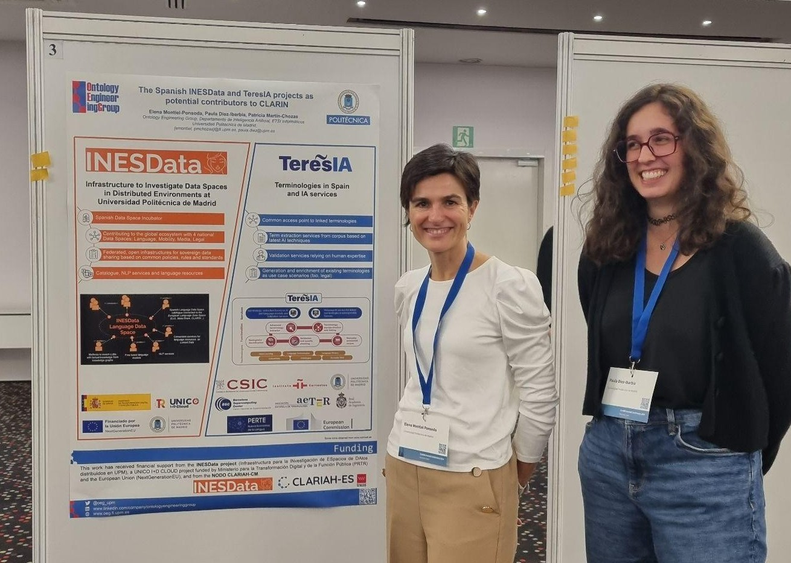

The INESData project recently held a technical workshop focused on the use of the INESData Connector, a key tool for interaction in federated and secure data spaces.
During the session, an introduction to the INESData system was presented, explaining its logical architecture, authentication, and main functionalities of the Connector Interface, such as the management of vocabularies, assets, policies, contracts, federated catalogs, and resource transfers.
The platform is developed on Eclipse Dataspace Connector (EDC), ensuring its alignment with European interoperability standards. The workshop allowed participants to practically explore the system's capabilities for reliable data exchange between organizations.
On March 19, 2025, in Villers-Cotterêts, France, the EU LDS Launch Conference was held, where INESData participated by sharing its vision as a user of the Common European Language Data Space (LDS).
Following the technical presentation by INESData, José Manuel Gómez Pérez (Expert AI, INESData) discussed the challenges and perceived benefits. He highlighted the difficulty of accessing data across multiple sectors due to corporate silos and the need for a more interoperable environment.
INESData emphasized the potential of the LDS to improve the management of linguistic data in artificial intelligence and advocated for common standards to facilitate its adoption across various industries.
We announce the publication of the Corpus of Contractual Clauses in Spanish Legal (3CEL), a reference resource in the field of Natural Language Processing (NLP) applied to contractual law in Spanish. This corpus has been developed by the Instituto de Ingeniería del Conocimiento (IIC) within the context of the INESData project, a project coordinated by the Universidad Politécnica de Madrid (UPM).
3CEL is a corpus of contractual information extraction data that contains 373 manually annotated tenders with 19 defined categories, totaling 4,782 labels. This resource is essential for understanding and reviewing contracts and legal documents, enabling a structured classification of their content.
The development of 3CEL involved a rigorous process that included data collection, label definition, transcription and text cleaning, anonymization, and annotation of documents obtained from the Spanish Public Sector Procurement Platform. These contracts correspond to tenders executed in the Community of Madrid between December 2021 and December 2023. Additionally, it has been used to train and evaluate advanced NLP models, highlighting the MEL language model (Spanish Legal Model) for its precision and efficiency in categorizing spans in legal texts.
The publication of this corpus represents a significant advancement in the availability of NLP resources in Spanish and opens new opportunities for research and applications in the legal and technological fields.
Madrid, December 3-4, 2024. At the First Gaia-X Spain Data Spaces Summit, a key event for the future of technology and the data economy in Spain, INESData participated in the session "Technologies for Data Spaces".
Elena Montiel Ponsoda (OEG-UPM) and Juan Miguel Auñón (GMV) explained how to create a data space using the INESData platform, the technologies developed, and a practical example, the mobility data space developed in the project.
INESData is presented as a practical and simple tool to facilitate the deployment of a data space.
Madrid, December 12, 2024. INESData participated in the UNICO I+D Project Meet-up Madrid 2024, an event that brought together the main projects funded under the UNICO I+D Cloud program. The event, organized at the ETSI de Montes, Forestal y del Medio Natural (UPM) by the ELADAIS project, was an opportunity for knowledge exchange and synergy generation in the field of digital innovation.
In the session "Action presentations, key use cases and demonstrators", INESData representatives Óscar Corcho and Cristina Sandoval presented "INESData - Infrastructure to Investigate Data Spaces in Distributed Environments at UPM". During the presentation, the project's achievements in creating a national data space incubator based on federated cloud-edge infrastructures were highlighted, as well as its impact on strategic sectors such as mobility and linguistics in Europe.
Currently, the UNICO I+D program includes 16 projects, among them ELADAIS, AMOR, and Data&CodeContinuum, which, like INESData, share the vision of fostering cloud innovation and are entirely led by the Universidad Politécnica de Madrid.
The event brought together representatives of projects funded by UNICO I+D Cloud, and included representatives from the European Commission, such as Stefan Bogensberger and Rolf Riemenschneider, as well as experts from the Instituto Tecnológico de Informática (ITI), including Daniel Sáez Domingo.
Barcelona, October 15, 2024. INESData is featured in two sessions at the CLARIN 2024 conference:
"The Spanish INESData and TeresIA projects as potential contributors to CLARIN", presented by Elena Montiel, Paula Diez, and Patricia Martín Chozas.

"Evaluating LLMs for factuality in multilingual, low-resourced scenarios", by José Manuel Gómez-Pérez.
This event brings together international experts in language processing and linguistic data spaces.
This practical guide, which is continuously updated as the project progresses, focuses in this edition on the governance of data spaces, a crucial aspect for their development and consolidation.
The new version of the Handbook incorporates three key elements:
Practical Guide on Compliance Issues with Data Space regulations.
Definition of roles in Data Space governance, establishing the responsibilities and functions of the various actors involved.
Standard Contractual Models, designed to facilitate clear and structured agreements between parties under the governance framework.
In addition to serving as a reference for the creation and management of data spaces within the INESData project, this version includes lessons learned and references from international initiatives that strengthen the governance framework.
You can download the document at the following link. (Spanish version)
The INESData Local Environment allows users Get familiar with the INESData connector. By running the local environment, users will be able to learn how the INESData connector works as well as see how various connectors interact with each other.
The environment is packaged and allows using the latest versions of INESData Connector (v0.2.0) and the INESData Interface Connector using docker images, using a simple: docker compose up. Among the main functionalities are:
A Postman collection has been made available to make examples of interactions between local environment connectors in a simple way
A repository for S3-type assets has been included using MinIO as part of the automated deployment of the connector
First version of Vocabulary Management that allows defining the vocabularies of each Data Space at design time and automatically creating the UI for annotation
Asset transfer is fully functional from the interface
We are proud to announce our participation in Data Week 2024, within the framework of the Data Spaces Symposium 2024, which was held in Darmstadt, Germany. During the session "Generative AI: BDVA's Members Experience", we had the opportunity to share our experiences and advances in generative artificial intelligence with other leaders in the sector.
This event has been a crucible of innovation and collaboration, where we will explore how generative AI is transforming data spaces and empowering new opportunities for the industry.
We can't wait to show you how INESData is at the forefront of this technological revolution! For more information, you can visit: Data Week 2024 - Generative AI Session
INESData organizes two workshops in the framework of EELISA Connect 2024
Madrid, March 4-8, 2024. As part of EELISA Connect 2024, INESData has organized and conducted two workshops addressing advances in the development of data spaces and artificial intelligence technologies.
During the event, INESData coordinated two key sessions:
"Data Spaces for Researchers: Fostering Collaborative Research and Innovation" (March 4-5). Coordinated by Esteban González and Carlos Ruiz, this session explored the role of data spaces in collaborative research. Andrés García and Juan Miguel Auñón presented strategies to promote interoperability and open access to scientific data. Más información: EELISA Connect Workshop Data Spaces
"Teaching and Learning Language Technologies (text and speech) in light of Generative AI" (March 7-8). Led by Elena Montiel and Patricia Martín Chozas, this session focused on teaching and learning language technologies in the era of generative artificial intelligence. Discussions covered innovative applications in education, natural language processing, and multilingual language models. Más información: EELISA Connect Workshop Data Spaces
INESData reinforces its commitment to open research, artificial intelligence, and data interoperability in Europe.
The portal of the Polytechnic University of Madrid has published a press release echoing the development, implications and potential of the INESData incubator.
The press release highlights that "Develop a Spanish Data Spaces Incubator to encourage the adoption of this type of technology and accelerate the development of a Data Spaces ecosystem in our country is the objective of INESData (Infrastructure for the Research of Data Spaces), a project led by the Polytechnic University of Madrid (UPM) that has received 5 million euros of financing from the Spanish UNICO R&D Cloud program."
Our colleagues Gabriela Argüelles Terrón, Patricia Martín Chozasy, and Víctor Rodríguez Doncel have published the article "Event Extraction and Semantic Representation from Spanish Workers' Statute Using Large Language Models" as part of the 36th International Conference on Legal Knowledge and Information Systems (JURIX 2023).
This work uses LLMs to process an important piece of Spanish legislation: the Workers' Statute. The proposed method extracts the relevant events in their articles using a GPT-3.5 model and represents the entities involved in the events and the relationships between them as RDF triplets. The experiments carried out to select a strategy include zero- and few-shot learning. Finally, this work proposes a strategy to elevate the extracted legal relationships to a legal knowledge graph.
You can find the article as part of the IOS Press Ebooks here
The portal of the Higher Technical School of Computer Engineers has published a press release echoing the development, implications and potential of the INESData incubator.
The press release highlights that "The INESData project (Infrastructure for the Research of Data Spaces distributed at UPM) is an initiative led by the Polytechnic University of Madrid (UPM) to through its research groups Ontology Engineering Group (OEG) and the Information Processing and Telecommunications Center (IPTC). Its main mission is to create an incubator of data spaces in Spain, with the aim of promoting research, development and. innovation in areas related to Data Space technology and promoting public-private collaboration."
This past October 26, the project, challenges and objectives were presented at the >European Big Data Value Forum (EBDVF) during the session "Data Spaces Roadmap and Future Programme". This is an incredible opportunity to share our vision and progress in creating interoperable and secure data spaces in Spain and its impact in Europe.
You can find more information about the event in the following link.
E4 deliverable published. Preliminary version of the handbook.
Advances in technology and artificial intelligence (AI) have highlighted the importance of data. Currently, it is very common to use deep learning techniques, Machine Learning in English, for the creation of systems and services. Such techniques need to use a certain amount of data; Furthermore, depending on the quantity and quality of the data used, the system obtained will be of greater or lesser quality.
This practical guide aims to present the data spaces created in the INESData incubator and explain the creation process so that those interested in developing data spaces can have a practical reference. Given that the project is still in its early phases, this version of the guide will focus, above all, on explaining what data spaces are as well as analyzing the different international initiatives that serve as a reference.
You can find the link and download the document in the following link.